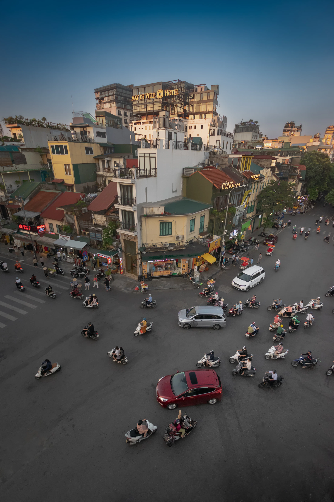

FOR JIAYU / 为佳毓而写VOL. 01 — 人与远方 PERSONAL EDITION
THE WORLD, THROUGH YOUR EYES.
走更多地方。
看见更多的人。
沿着你走过的路，
为下一次独自出发，寻找新的叙事。
真实。自由。纪录片感。↓ SCROLL TO EXPLORE

01 / EVERYDAY LIFE
一份基于佳毓的经历、偏好与愿望，经授权公开的个人图集。18 DESTINATIONS · ONE PERSONAL PERSPECTIVE
01 / THE WAY YOU TRAVEL
地图很大。
先从你出发。
你想看的，越来越不只是风景。
还有人怎样生活，以及路上的自己。
01
一个人，也出发。
保留独自探索的自由，
把旅途交回自己的节奏。
02
把预算留给体验。
青旅、公共交通、步行，
让真正想要的体验有余地。
03
走进普通人的日常。
从一座市场、一段街巷开始，
先观察，再慢慢理解。
04
把看见的，留下来。
真实、自由、纪录片感，
每一程都带一道拍摄题。
依据 Digital Me 中截至 2026.10.20 的自述整理。这些是选路的起点，随时可以调整。
已记录的足迹
南京 / 杭州巴厘岛 / 佩尼达岛东京曼谷尼泊尔
按档案中的五段旅行整理；未将具体年月或未确认的城市补成经历。02 / WHERE TO NEXT
下一程，
有你的理由。
从日常街巷到更远的愿望。
每一份路线，都解释为什么适合你。
这条线索，还在地图之外。
试试「街头」「日本」「艺术」或换一个主题。
03 / A STORY WORTH TELLING
从打卡，
到看见。
尼泊尔那次旅行，让你开始追问：
人们为什么这样生活。
这一次，把问题带回街头。
给你的纪录片题目
一家小店，如何度过一天？
01 清晨开门02 午间的来客03 傍晚收摊
拍摄前先沟通并征得同意，让交流先于镜头。04 / MAKE IT YOURS
这次，
按你的方式走。
偏好会变，路线也该跟着变。
选一个方向，再留一点余地。
YOUR NEXT CHAPTER为你展开的 3 种可能
官方资料核对于 2026.10.23 · 每份攻略附原始入口